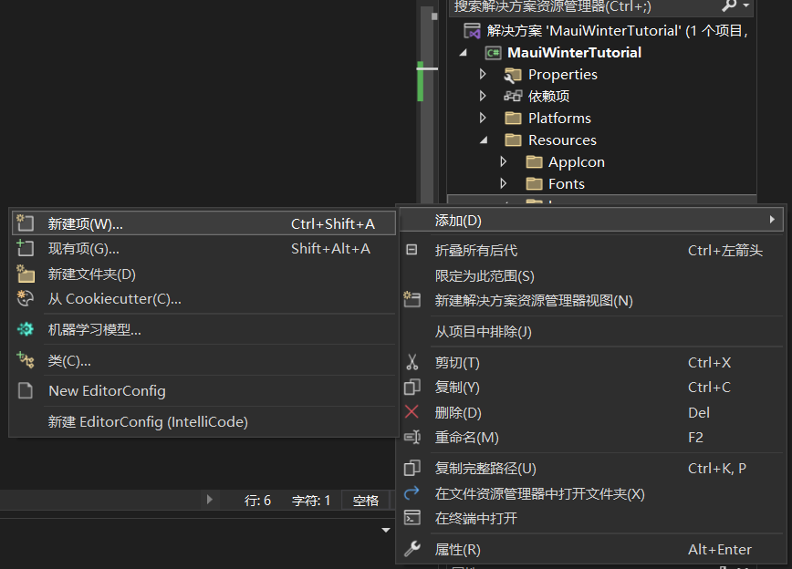
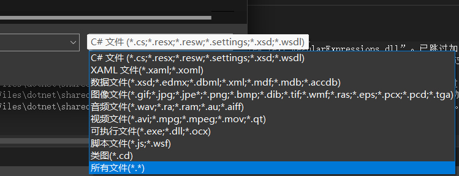

环境配置
感兴趣的同学可在课前按照这一教程 练习：创建第一个 .NET MAUI 应用 - Training | Microsoft Learn 配置环境，以跑出如下的Hello World界面为成功。
本节课内容将主要针对于Windows平台下的开发，暂时无需配置其他平台的环境。

MAUI简介
什么是MAUI
MAUI，全名Multi-platform Application User Interface，是微软提出的一个跨平台框架，用于使用 C# 和 XAML 创建本机移动和桌面应用。
使用 .NET MAUI，可从单个共享代码库开发可在 Android、iOS、macOS 和 Windows 上运行的应用。
可以针对以下平台编写 .NET Multi-platform App UI (.NET MAUI) 应用：
- Android 5.0 (API 21) 或更高版本。
- iOS 11 或更高版本，使用最新版本的 Xcode。
- macOS 10.15 或更高版本，使用 Mac Catalyst。
- Windows 11 和 Windows 10 版本 1809 或更高版本，使用 Windows UI 库 (WinUI) 3。
MAUI开发平台
Windows + Visual Studio，强烈推荐
macOS + Visual Studio for Mac（Visual Studio for Mac 计划于 2024 年 8 月 31 日停用）
Windows/macOS/Linux + Vscode with .NET MAUI Extension（预览版）
此扩展仍为早期预览版，因此存在许多已知限制：
- XAML 编辑功能非常轻量 - 你可以获得基本的语法突出显示和自动完成功能。 我们正在探索如何在将来的版本中改进 XAML 体验。
- 目前，无法切换 IntelliSense 的目标框架（它仅针对 .csproj 文件中列出的第一个目标框架显示语法突出显示）。 此功能正在开发中。
- 目前不支持 XAML 和 .NET 热重载。
- 此扩展尚未使用最新的 iOS 和 Xcode beta 版本进行全面测试。
| 你的操作系统 | 受支持的目标平台 |
|---|---|
| Windows | Windows、Android |
| macOS | Android、iOS、macOS |
| Linux | Android |
MAUI基础教程
MAUI文件结构

MauiWinterTutorial：
csproj文件，用于整个项目的配置Platforms：针对不同平台所需的文件资源和配置
Resources：图标、图片、字体等项目资源文件
MauiProgram.cs：这是启动应用的代码文件。 此文件中的代码充当应用的跨平台入口点，用于配置和启动应用。 模板启动代码指向由 App.xaml 文件定义的
App类。所有 XAML 文件通常都包含两个文件，即 .xaml 文件本身，以及一个相应的代码文件，该文件是“解决方案资源管理器”中的 .xaml 文件的子项。 .xaml 文件包含 XAML 标记，代码文件包含用户创建的用于与 XAML 标记交互的代码。
App.xaml 和 App.xaml.cs：App.xaml 文件包含应用范围的 XAML 资源，例如颜色、样式或模板。 App.xaml.cs 文件通常包含用于实例化 Shell 应用程序的代码。 在此项目中，它指向
AppShell类。AppShell.xaml 和 AppShell.xaml.cs：此文件定义
AppShell类，该类用于定义应用的视觉对象层次结构（页面导航）。
MainPage.xaml 和 MainPage.xaml.cs：这是应用显示的启动页。 MainPage.xaml 文件定义页面的 UI（用户界面）。 MainPage.xaml.cs 包含 XAML 的代码隐藏，如按钮单击事件的代码。
项目启动流程：
MauiProgram.cs –> App –> AppShell –> MainPage
XAML概述
eXtensible Application Markup Language（XAML，可扩展的应用程序标记语言）是基于 XML 的语言，可替代编程代码执行对象的实例化和初始化并按父子层次结构来组织这些对象。
XAML 使开发人员能够使用标记而不是代码定义 .NET Multi-platform App UI (.NET MAUI) 应用中的用户界面。 XAML 在 .NET MAUI 应用中不是必需的（XAML实现的UI设计功能均可通过等效的C#代码实现），但建议使用它来开发 UI，因为它通常更简洁、更直观、更连贯，并且具有工具支持。 XAML 也非常适合与模型-视图-视图模型 (MVVM) 模式一起使用，其中 XAML 定义视图，而视图通过基于 XAML 的数据绑定链接到视图模型代码。
属性设置
1 | <Label Text="Hello, XAML!" |
1 | <Label Text="Hello, XAML!" |
这两个指定 TextColor 属性的示例在功能上是等效的。
在这里，Label是一个对象元素。 它是一个以 XML 元素表示的 .NET MAUI 对象。
可以等效认为一个XAML标签就代表了一个对象（类），对象之间成并列或包含关系，标签内部包含了这个对象的属性及其他信息。
命名空间
通常而言，不会通过 XAML 来定义命名空间，而只是在 XAML 中声明来自C#程序或其他程序中的命名空间。
XAML 使用 xmlns XML 特性进行命名空间声明。 XAML 文件的根元素中始终有两个 XAML 命名空间声明。
第一个定义默认命名空间：
1
xmlns="http://schemas.microsoft.com/dotnet/2021/maui"
默认命名空间指定 XAML 文件中定义的不带前缀的元素引用 .NET Multi-platform App UI (.NET MAUI) 类，例如 ContentPage、Label 和 Button。
第二个命名空间声明使用
x前缀：1
xmlns:x="http://schemas.microsoft.com/winfx/2009/xaml"
XAML 使用前缀声明非默认命名空间，并在引用命名空间中的类型时使用前缀。
x命名空间声明指定在 XAML 中定义的带有x前缀的元素用于 XAML固有的元素和属性。下表概述了 .NET MAUI 支持的
x构造：构造 描述 x:Arguments指定非默认构造函数或工厂方法对象声明的构造函数参数。 x:Class指定 XAML 中定义的类的命名空间和类名。 类名必须与代码隐藏文件的类名匹配。 请注意，此构造只能出现在 XAML 文件的根元素中。 x:ClassModifier指定程序集中生成的类的访问级别。 x:DataType指定 XAML 元素及其子元素将绑定到的对象的类型。 x:FactoryMethod指定可用于初始化对象的工厂方法。 x:FieldModifier指定命名 XAML 元素的生成字段的访问级别。 x:Key为 ResourceDictionary 中的每个资源指定一个唯一的用户定义密钥。 密钥的值用于检索 XAML 资源，通常用作 StaticResource标记扩展的参数。x:Name指定 XAML 元素的运行时对象名称。 设置 x:Name类似于在代码中声明变量。x:TypeArguments指定泛型类型构造函数的泛型类型参数。 1
2
3
4
5<ContentPage xmlns="http://schemas.microsoft.com/dotnet/2021/maui"
xmlns:x="http://schemas.microsoft.com/winfx/2009/xaml"
x:Class="MauiWinterTutorial.MainPage">
...
</ContentPage>
可以通过使用前缀声明 XAML 命名空间，在 XAML 中引用类型，命名空间声明指定公共语言运行时 (CLR) 命名空间名称以及可选的程序集名称。 这通过在命名空间声明中定义以下关键字的值来实现：
clr-namespace:或using:- 在程序集（程序集内部）中声明的 CLR 命名空间，此程序集包含要作为 XAML 元素公开的类型。 此关键字是必需的。assembly=- 包含引用的 CLR 命名空间的程序集（外部程序集）。 该值是程序集的名称，不带文件扩展名。 程序集的路径应在包含将引用程序集的 XAML 文件的项目中作为引用建立。 如果 clr-namespace 值与引用类型的应用代码位于同一程序集中，则可以省略此关键字。
在程序集中声明命名空间：
1 | <ContentPage ... xmlns:local="clr-namespace:MyMauiApp"> |
在以下例子中，我们可看到如何在 XAML 中引用在同程序集下的 C# 文件中定义的命名空间：
1 | //Monkey.cs |
1 | <!-- MainPage.xaml --> |
引用其他程序集中的命名空间：
1 | <ContentPage ... xmlns:custom="clr-namespace:CustomNamespace;assembly=CustomAssembly"> |
在这里，custom是自行定义的前缀，CustomNamespace是要引用的命名空间的名称，CustomAssembly是包含这个命名空间的程序集的名称。在之后可以使用custom这个前缀来引用这个命名空间中的类型，例如<custom:CustomType />。
标记拓展
将在数据绑定一节详细展开
XAML热重载
XAML 热重载是一项 Visual Studio 功能，可用于查看正在运行的应用中 XAML 更改的结果，而无需重新生成项目。 如果没有 XAML 热重载，每次要查看 XAML 更改结果时，都需要生成和部署应用。
当 .NET MAUI 应用连接了调试器并在调试配置下运行时，XAML 热重载会分析 XAML 编辑内容，并将相关更改发送到正在运行的应用。 由于它不会为整个页面重新创建 UI，因此会保留 UI 状态，并更新受编辑影响的控件上被更改的属性。 此外，可保持导航状态和数据，这样既可快速迭代 UI，又不影响在应用中的即时位置。 因此，可减少重新生成和部署应用以验证 UI 更改的时间。
MAUI页面设计
视图
Label
Label可用于显示带有修饰的文本
1
2
3
4
5
6
7
8
9
10
11
12
13
14
15
16
17
18
19<!-- 创建标签 -->
<Label Text="Hello world" />
<!-- 设置颜色 -->
<Label TextColor="#77d065"
Text="This is a green label." />
<Label TextColor="Green"
Text="This is a green label." />
<!-- 添加换行 -->
<Label Text="First line Second line" />
<Label>
<Label.Text>
First line
Second line
</Label.Text>
</Label>Label 具有
FormattedText属性，该属性允许在同一视图中显示具有多个字体和颜色的文本。FormattedText属性是FormattedString类型，由一个或多个 Span 实例组成，通过Spans属性设置。1
2
3
4
5
6
7
8
9
10
11
12<!-- 使用格式化文本 -->
<Label LineBreakMode="WordWrap">
<Label.FormattedText>
<FormattedString>
<Span Text="Red Bold, " TextColor="Red" FontAttributes="Bold" />
<Span Text="default, " FontFamily="OpenSansSemiBold" FontSize="14" />
<Span Text="default, " FontFamily="OpenSansRegular" FontSize="14"
TextDecorations="Underline" />
<Span Text="italic small." FontAttributes="Italic" FontSize="12" />
</FormattedString>
</Label.FormattedText>
</Label>BoxView
BoxView 可绘制具有指定宽度、高度和颜色的简单矩形或正方形。
1
2
3
4
5
6<BoxView Color="CornflowerBlue"
CornerRadius="10"
WidthRequest="160"
HeightRequest="160"
VerticalOptions="Center"
HorizontalOptions="Center" />Border
要绘制边框，可创建一个 Border 对象并设置其属性以定义外观，然后将其子级设置为要添加边框的控件
1
2
3
4
5
6
7
8
9
10
11<Border Stroke="#C49B33"
StrokeThickness="4"
StrokeShape="RoundRectangle 40,0,0,40"
Background="#2B0B98"
Padding="16,8"
HorizontalOptions="Center">
<Label Text=".NET MAUI"
TextColor="White"
FontSize="18"
FontAttributes="Bold" />
</Border>Image
Image 显示可从本地文件、URI 或流加载的图像。 支持动画 GIF 等标准平台图像格式，还支持本地可缩放矢量图形 (SVG) 文件
右键Resources/Images文件夹，选择添加-现有项-右下角文件类型选择所有文件-选择一个图片文件（文件名需小写）
 1
2
3
4
5<!-- 使用maui自带的dotnet_bot图片 -->
<Image Source="dotnet_bot.png" />
<!-- 把Source改为自己的图片 -->
<Image Source="eesastlogo.png" WidthRequest="100" HeightRequest="100"/>控制图像缩放
Aspect属性确定如何缩放图像以适合显示区域，并应设置为Aspect枚举的其中一个成员：AspectFit- 对图像上下加框（如需要），以使整个图像适合显示区域，并根据图像的宽度或高度，在顶部/底部或侧边添加空白区域。AspectFill- 剪裁图像，使其填充显示区域，同时保持纵横比。Fill- 拉伸图像，以完全、准确填充显示区域。 这可能会导致图像失真。Center- 将图像在显示区域居中显示，同时保持纵横比。
1
2<!-- 控制图像缩放 -->
<Image Source="eesastlogo.png" HeightRequest="100" WidthRequest="200" Aspect="Fill" />Button
Button 可显示文本并响应指示应用执行任务的点击或单击操作。
1
2
3
4
5
6
7
8
9<Button Text="Click The Button"
VerticalOptions="Center"
HorizontalOptions="Center"
Clicked="OnButtonClicked" />
<Label x:Name="label"
Text="Click Counter"
FontSize="18"
VerticalOptions="Center"
HorizontalOptions="Center" />同时，在
MainPage.xaml.cs的MainPage类中添加以下内容：1
2
3
4
5
6
7
8
9
10
11
12
13
14int count = 0;
private void OnButtonClicked(object sender, EventArgs e)
{
count++;
if (count == 1)
{
label.Text = "Have Clicked " + count.ToString() + " Time";
}
else
{
label.Text = "Have Clicked " + count.ToString() + " Times";
}
}ListView
将在数据拓展一节详细展开
布局
布局类允许在应用程序中排列 UI 控件并对其进行分组。 选择布局类需要了解布局如何定位其子元素，以及布局如何调整其子元素的大小。 此外，可能还需要嵌套布局来创建所需的布局。

StackLayout
StackLayout 在水平或垂直方向上组织一维堆栈中的元素。 默认情况下，StackLayout 是垂直方向。
1
2
3
4
5
6
7
8
9
10
11
12
13
14
15
16
17
18
19
20
21
22
23
24
25
26
27
28
29
30
31
32<StackLayout Margin="20"
Spacing="6">
<Label Text="Veritical" />
<BoxView Color="Red"
HeightRequest="40"
WidthRequest="400"
HorizontalOptions="Start"/>
<BoxView Color="Yellow"
HeightRequest="40"
WidthRequest="400"
HorizontalOptions="Center"/>
<BoxView Color="Blue"
HeightRequest="40"
WidthRequest="400"
HorizontalOptions="End"/>
</StackLayout>
<StackLayout Margin="20" HeightRequest="300"
Spacing="100" Orientation="Horizontal">
<Label Text="Horizontal" />
<BoxView Color="Red"
HeightRequest="200"
WidthRequest="40"
VerticalOptions="Start"/>
<BoxView Color="Yellow"
HeightRequest="200"
WidthRequest="40"
VerticalOptions="Center"/>
<BoxView Color="Blue"
HeightRequest="200"
WidthRequest="40"
VerticalOptions="End"/>
</StackLayout>Grid
Grid 提供网格化的布局形式，它将其子级组织为可以有比例大小或绝对大小的行和列。
创建Grid
可以使用
RowDefinitions和ColumnDefinitions属性定义Grid 的布局行为，这两个属性分别是RowDefinition和ColumnDefinition对象的集合。 这些集合定义 Grid 的行和列特征，并且应针对 Grid 中的每一行包含一个RowDefinition对象，以及针对 Grid 中的每一列包含一个ColumnDefinition对象。RowDefinition类定义类型为GridLength的Height属性，而ColumnDefinition类定义类型为GridLength的Width属性。GridLength结构根据GridUnitType枚举指定行高或列宽，其中有三个成员：Absolute– 行高或列宽的值采用与设备无关的单位（XAML 中的数字）。Auto– 根据单元格内容自动调整行高或列宽（XAML 中的Auto）。Star– 按比例分配剩余行高或列宽（在 XAML 中，数字后跟*）。
将子视图包含于Grid单元格中
可以将子视图放置在包含
Grid.Column和Grid.Row附加属性的特定 Grid单元格中。此外，要使子视图跨越多个行和列，请使用Grid.RowSpan和Grid.ColumnSpan附加属性。
1
2
3
4
5
6
7
8
9
10
11
12
13
14
15
16
17
18
19
20
21
22
23
24
25
26
27
28
29
30
31
32
33
34
35
36
37
38
39
40
41
42
43<Grid>
<Grid.RowDefinitions>
<RowDefinition Height="2*" />
<RowDefinition Height="*" />
<RowDefinition Height="100" />
</Grid.RowDefinitions>
<Grid.ColumnDefinitions>
<ColumnDefinition Width="100"/>
<ColumnDefinition />
</Grid.ColumnDefinitions>
<BoxView Color="Green" />
<Label Text="Row 0, Column 0"
HorizontalOptions="Center"
VerticalOptions="Center" />
<BoxView Grid.Column="1"
Color="Blue" />
<Label Grid.Column="1"
Text="Row 0, Column 1"
HorizontalOptions="Center"
VerticalOptions="Center" />
<BoxView Grid.Row="1"
Color="Teal" />
<Label Grid.Row="1"
Text="Row 1, Column 0"
HorizontalOptions="Center"
VerticalOptions="Center" />
<BoxView Grid.Row="1"
Grid.Column="1"
Color="Purple" />
<Label Grid.Row="1"
Grid.Column="1"
Text="Row1, Column 1"
HorizontalOptions="Center"
VerticalOptions="Center" />
<BoxView Grid.Row="2"
Grid.ColumnSpan="2"
Color="Red" />
<Label Grid.Row="2"
Grid.ColumnSpan="2"
Text="Row 2, Columns 0 and 1"
HorizontalOptions="Center"
VerticalOptions="Center" />
</Grid>
MAUI数据绑定
绑定的概念
数据绑定是将两个对象的属性链接起来的技术，其中一个属性的更改会自动反映在另一个属性中。 数据绑定涉及两个对象，其中一个几乎总是从View派生的元素，并构成页面可视界面的一部分。 另一个对象则是：
- 派生自另一个View，且通常位于同一页面。
- 或是代码文件中的对象。
目标和源
.NET Multi-platform App UI (.NET MAUI) 数据绑定在两个对象之间链接一对属性，其中至少一个对象通常是用户界面对象。 这两个对象称为“目标”和“源”：
- “目标”是设置数据要绑定的对象（和属性）。
- “源”是数据绑定引用的对象（和属性）。
XAML中的标记拓展
XAML 标记扩展支持从各种源设置元素属性，从而帮助增强 XAML 的功能和灵活性。
例如，通常会按如下设置Color 属性：
1 | <BoxView Color="Blue" /> |
标记扩展是表达元素属性的另一种方法，这为我们提供了一种从已创建的变量、页面其它元素等其它途径设置Color属性的方法。 .NET MAUI XAML 标记扩展通常由括在大括号中的属性值标识：
1 | <BoxView Color="{StaticResource themeColor}" /> |
.NET MAUI 中包含的主要标记拓展有：
x:Static标记扩展：该类具有类型为string的名为Member的单一属性，你可以将其设置为公共常量、静态属性、静态字段或枚举成员的名称。1
2
3
4
5
6namespace MarkupExtensions;
static class AppConstants
{
public static double NormalFontSize = 18;
}1
2
3
4
5
6
7
8
9
10<ContentPage xmlns="http://schemas.microsoft.com/dotnet/2021/maui"
xmlns:x="http://schemas.microsoft.com/winfx/2009/xaml"
xmlns:local="clr-namespace:MarkupExtensions"
x:Class="MarkupExtensions.StaticDemoPage">
<Label Text="Label No. 3"
FontSize="{x:Static Member=local:AppConstants.NormalFontSize}" />
...
</ContentPage>x:Reference标记拓展： 该类具有string类型的名为Name的单一属性，可以将其设置为页面上已使用x:Name命名的元素的名称。x:Binding标记拓展：具体的实现绑定方式，将目标对象与源的属性实现绑定。- 将目标对象的
BindingContext属性设置为源对象 - 在目标对象上调用
SetBinding方法（通常与Binding类结合使用），将该对象的属性绑定到源对象的属性
1
2
3
4
5
6
7
8
9
10
11
12
13
14
15
16
17
18<StackLayout>
<Label Text="ROTATION"
BindingContext="{x:Reference slider}"
Rotation="{Binding Path=Value}"
FontAttributes="Bold"
FontSize="18"
HorizontalOptions="Center"
VerticalOptions="Center" />
<Slider x:Name="slider"
Maximum="360"
VerticalOptions="Center" />
<Label BindingContext="{x:Reference slider}"
Text="{Binding Value, StringFormat='The angle is {0:F0} degrees'}"
FontAttributes="Bold"
FontSize="18"
HorizontalOptions="Center"
VerticalOptions="Center" />
</StackLayout>- 将目标对象的
x:Type标记拓展：标记扩展返回该类或结构的类型，通常与x:Array搭配使用。x:Array标记拓展：在标记中定义数组。ListView：在
ItemSource中定义要显示的项目集合，在ItemTemplate中用于指定显示每个项目模板（类型为DataTemplate）ListView 中每个项的外观由
DataTemplate定义，且DataTemplate必须引用Cell类来显示项。 每个单元格表示 ListView 中的数据项。 .NET MAUI 包含以下内置单元格：TextCell，用于在单独的行上显示主要文本和辅助文本。ImageCell，用于在单独的行上显示带有主要文本和辅助文本的图像。SwitchCell（不常用），用于显示文本以及可打开或关闭的开关。EntryCell（不常用），用于显示可编辑的标签和文本。ViewCell，是一个自定义单元格，其外观由 View（也就是之前所讲的视图和布局的组合） 定义。 如果要完全定义 ListView 中每个项的外观，则应使用此单元格类型。
1
2
3
4
5
6
7
8
9
10
11
12
13
14
15
16
17
18
19
20
21
22
23
24
25
26
27
28
29
30
31
32<ListView Margin="10">
<ListView.ItemsSource>
<x:Array Type="{x:Type Color}">
<Color>Aqua</Color>
<Color>Black</Color>
<Color>Blue</Color>
<Color>Fuchsia</Color>
<Color>Gray</Color>
<Color>Green</Color>
<Color>Lime</Color>
<Color>Maroon</Color>
<Color>Navy</Color>
<Color>Olive</Color>
<Color>Pink</Color>
<Color>Purple</Color>
<Color>Red</Color>
<Color>Silver</Color>
<Color>Teal</Color>
<Color>White</Color>
<Color>Yellow</Color>
</x:Array>
</ListView.ItemsSource>
<ListView.ItemTemplate>
<DataTemplate>
<ViewCell>
<BoxView Color="{Binding}"
HeightRequest="10"
Margin="3" />
</ViewCell>
</DataTemplate>
</ListView.ItemTemplate>
</ListView>
绑定模式
Default-目标自身的默认绑定模式OneWay- 数据从源到目标单向传输OneWayToSource- 数据从目标到源单向传输TwoWay- 数据在源和目标之间双向传输OneTime- 数据从源到目标单向传输，但只有BindingContext发生更改时才会传输
MVVM设计模式
MVVM模式的组成部分
MVVM是Model-View-ViewModel的缩写，目的是更好地分离前后端，降低代码的耦合程度。
MVVM 模式中有三个核心组件：模型（Model）、视图（View）和视图模型（View Model）。以下示意图显示了这三个组件之间的关系。

- View：负责定义用户在屏幕上看到的结构、布局和外观。 （纯前端外观）
- View Model：实现视图可以数据绑定到的属性和命令，并通过更改通知事件通知视图任何状态更改。 （存了所有View中需要显示的东西）
- Model：封装应用数据的非可视类，通常包括数据模型以及业务和验证逻辑。（View Model以外的其它类和数据）
MVVM案例分析：猴子查看软件
相关教程
微软官方教程：什么是 .NET MAUI？ - .NET MAUI | Microsoft Learn
一个超赞的MAUI workshop，可能需要一些C#和多线程基础：dotnet-presentations/dotnet-maui-workshop(github.com)